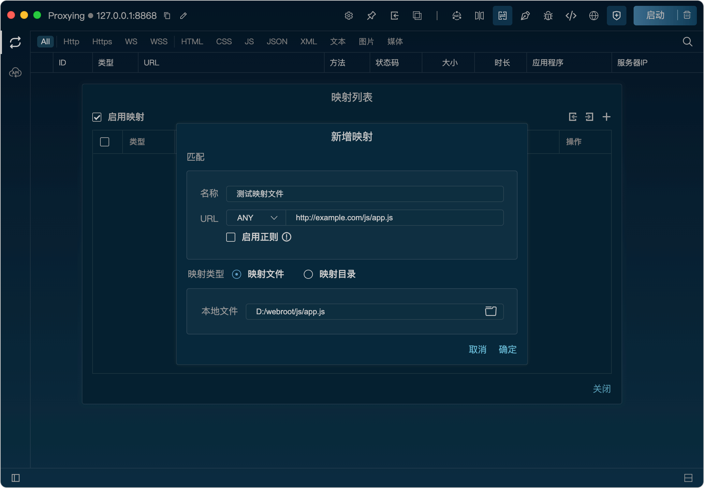
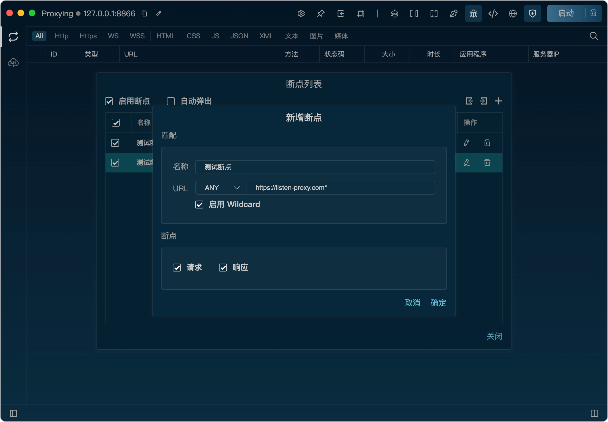

网关
网关功能可以对请求进行屏蔽和挂起，阻止请求发送到服务器，从而实现对某些请求的过滤和控制。

镜像
镜像功能可以将请求的域名替换为指定的域名，从而实现请求的重定向。效果类似于修改hosts文件，但更为方便快捷。
映射
映射功能可以将请求的URL会替换为指定的本地文件路径或者目录，从而实现对单个文件或整个网站的映射，方便前端开发调试。

重写
重写功能可以使用事先创建好的规则在请求发送到服务器之前对请求进行修改，也可以在响应返回给客户端之前对响应进行修改，从而实现对请求和响应的重写。

断点
断点功能可以在请求发送到服务器之前或响应返回给客户端之前暂停请求，从而实现对请求和响应的手动检查和修改。

脚本
脚本功能可以通过自定义JavaScript代码来修改请求和响应，从而实现对请求和响应的灵活控制和处理。

Websocket
Listen对Websocket调试提供了良好的支持，可以方便的对消息进行查看与搜索，并且可以直接对客户端或服务器发送消息。利用重写和脚本功能，甚至可以拦截和修改服务器或客户端发送的消息。

API Mocking
请求模拟可以构造任意的 HTTP/HTTPS 请求（URL、Method、Header、Body），用来测试API接口，同时还支持API集合存储。